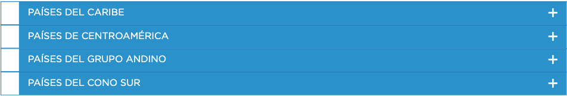

Las siguientes herramientas de código abierto permiten a los gobiernos e instituciones responder y prepararse mejor ante emergencias.
En este artículo podrás conocer un amplio listado de recursos de conocimiento abierto para dar respuesta a la pandemia del COVID-19, incluyendo tableros de monitoreo de casos o herramientas de información pública.
Iniciativa global para desarrollar soluciones que apoyen a la población migrante venezolana y comunidades receptoras ante la pandemia.
En un momento en el que millones de estudiantes en todo el mundo están quedándose en casa para contener la expansión del COVID-19, desde el Grupo BID hemos creado MovingOnline para apoyar la transición de la formación presencial a la formación en línea. Por ello, este espacio virtual abierto incluye diferentes recursos para apoyar a docentes, participantes y administradores de educación para avanzar hacia el eLearning de manera rápida y efectiva. Además, cuenta con un foro de colaboración para resolver dudas y/o compartir experiencias o iniciativas de otras instituciones.
Este artículo describe varios esfuerzos en la región donde se han utilizado y aplicado diseños de código abierto para producir protectores faciales y otros suministros críticos con la impresión 3D. Proporciona detalles sobre las metodologías utilizadas para coordinar la producción, distribución y recolección de materiales, las lecciones aprendidas de diferentes instancias y las preguntas planteadas por estas experiencias.